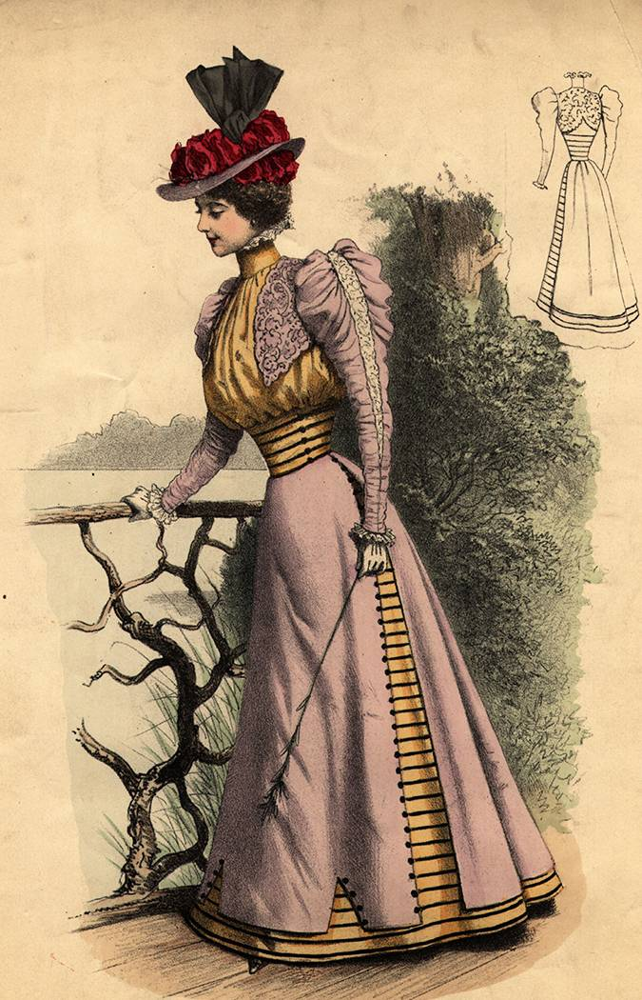

The Edwardian period saw the introduction of the "S-bend" or "health" corset, a style that altered the wearer's posture and (shocker) was no more healthful than its predecessors. Toward the end of the decade, the fashion shifted to girdles and away from the dramatic hourglass silhouettes that had been demanded of women for decades. Leisure apparel was also introduced, with options like blazers, long skirts, and wool sweaters becoming part of many women's wardrobes.
